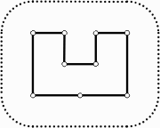

Задача D. Стена

Жил-был жадный Король. Он приказал своему главному Архитектору построить стену
вокруг его замка. Король был таким жадным, что не послушал предложение
Архитектора построить красивую кирпичную стену совершенной формы с изящными
высокими башнями. Вместо этого он приказал построить стену вокруг всего замка,
используя минимальное количество камня, но потребовал, чтобы стена не
подходила к замку ближе некоторого расстояния. Если Король узнает, что
Архитектор использовал больше ресурсов для постройки стены, чем было абсолютно
необходимо для удовлетворения требований, Архитектор лишится головы. Более
того, Архитектор должен представить проект стены, где указано точное количество
ресурсов.
Ваша задача - помочь бедному Архитектору сохранить голову, написав
программу, определяющую минимальную длину стены, которую можно построить
вокруг замка, удовлетворив требования Короля.
Задача слегка упрощается тем, что замок Короля представляет собой многоугольник
и расположен на плоской поверхности. Архитектор уже сопоставил замку
прямоугольную декартову систему координат и точно определил координаты каждого
угла замка в футах.
Ввод из файла wall.in. Первая строка содержит два целых числа N
и L, разделённых пробелом: N - число углов в замке Короля,
а L - минимальное число футов, на которое Король разрешил приблизить
стену к замку.
Следующие N строк описывают координаты углов замка в порядке обхода
по часовой стрелке. Каждая строка содержит два целых числа xi
и yi, разделённых пробелом и представляющих собой координаты
i-го угла в футах. Все углы имеют различные координаты, и стены замка
не пересекаются иначе как в углах.
Ограничения: 3 <= N <= 1000,
1 <= L <= 1000,
-10 000 <= xi, yi <= 10 000,
время 2 с.
Вывод в файл wall.out. Выводится единственное число - минимальная длина
стены в футах, которая может быть построена вокруг замка согласно требованиям
Короля. Вы должны представить Королю целое число футов, потому что вещественные
числа ещё не изобретены. Однако результат нужно округлить так, чтобы он
отличался не более чем на 8 дюймов от правильного (1 фут = 12 дюймов),
потому что большей неточности Король не потерпит.
Примеры
Ввод 1
9 100
200 400
300 400
300 300
400 300
400 400
500 400
500 200
350 200
200 200
Вывод 1
1628